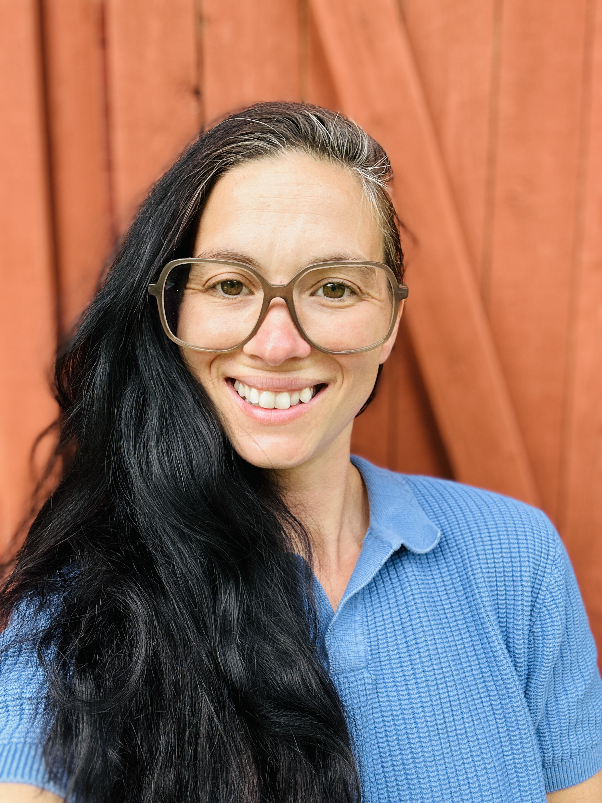

Textos breves & poesía
Tiempos y lugares que no serán olvidados.

Sobre la artista
Kristy Brüggemann - Un diario de una hermosa infancia: el abuso, el abandono y la vida en las calles reimaginada como prosa y poesía nueva.
Recientemente empecé a escribir en español como una forma de terapia, a llamar a los lugares y cosas que recuerdo, a sentirme conectado con mi entorno, a sentir familiaridad en un lugar tan ajeno y desconectado de las cosas que conozco por nombre.